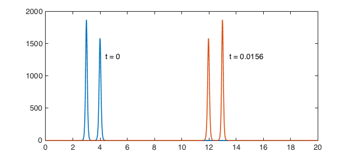
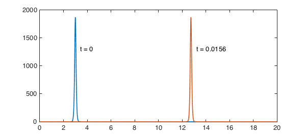
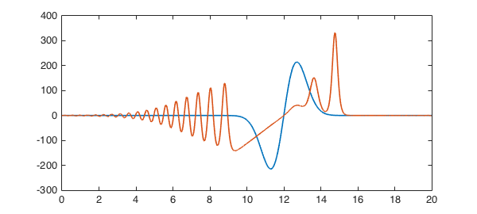

1. Soliton solutions
Chebfun's spin command makes it easy to compute solutions of the KdV equation, $$ u_t = -0.5(u^2)x - u. $$ For example, let's set to work on $[0, 20]$ with a two-soliton initial condition $$ u_0(x) = 3A^2 \hbox{sech}(.5A(x-1))^2 + 3B^2 \hbox{sech}(.5B(x-2))^2 $$ where the amplitude parameters $A$ and $B$ are quite close to each other, taking values $25$ and $23$. We can set up for the calculation like this:
A = 25; B = 23;
dom = [0 20]; x = chebfun('x',dom);
tspan = [0 .0156];
S = spinop(dom,tspan);
S.linearPart = @(u) - diff(u,3);
S.nonlinearPart = @(u) -.5*diff(u.^2); % spin cannot parse "u.*diff(u)"
S.init = 3*A^2*sech(.5*A*(x-3)).^2 + 3*B^2*sech(.5*B*(x-4)).^2;
Now let's perform the calculation. This initial condition corresponds to a pair of solitons with slightly different amplitudes and different speeds. As $t$ increases, both pulses move right, with the taller one moving faster. Around time $t=0.0078$, it overtakes the slower one, and around time $t=0.0156$, it is as far ahead at was originally behind.
pause off
tic, u = spin(S,spinpref('plot','off')); t = toc;
plot(S.init), hold on, plot(u), hold off

When spin is run is this simple mode without extra arguments, it makes adaptive decisions along the way that may slow it down, especially for equations like this with no diffusion (the KdV) equation is dispersive, not diffusive). The calculation just carried out took quite a while:
t
t = 65.497760000000000
For practical work we can often do much better by fixing the grid and the time step, like this. Here we do this and see that the image looks the same:
tic, u = spin(S,spinpref('plot','off','N',800,'dt',.00001)); t = toc;
plot(S.init), hold on, plot(u), hold off

However, the computation is much faster:
t
t = 1.386784000000000
2. Non-soliton solutions
Soliton solutions are so celebrated that it is easy to forget that they are special. Let us explore various other possibilities.
First of all, here is the taller of the two solitons just as before.
S.init = 3*A^2*sech(.5*A*(x-3)).^2;
u = spin(S,spinpref('plot','off','N',800,'dt',.00001));
plot(S.init), hold on, plot(u), hold off
What if we make the initial pulse a bit wider? This is no longer a soliton. As $t$ increases, it breaks into a big soliton and a small one, plus some low-amplitude information that is not in the form of solitons.
S.init = 3*A^2*sech(.35*A*(x-3)).^2;
u = spin(S,spinpref('plot','off','N',800,'dt',.00001));
plot(S.init), hold on, plot(u), hold off
If we make the pulse still wider, we get a beautiful train of solitons.
S.init = 3*A^2*sech(.05*A*(x-3)).^2;
u = spin(S,spinpref('plot','off','N',800,'dt',.00001));
plot(S.init), hold on, plot(u), hold off

Let's try something a little bit random:
S.init = 500*(x-12).*exp(-(x-12).^2);
u = spin(S,spinpref('plot','off','N',800,'dt',.00001));
plot(S.init), hold on, plot(u), hold off
3. References
The mathematics of solitons is thoroughly understood. See for example [1].
[1] M. J. Ablowitz and H. Segur, Solitons and the Inverse Scattering Transform, SIAM, 1981.